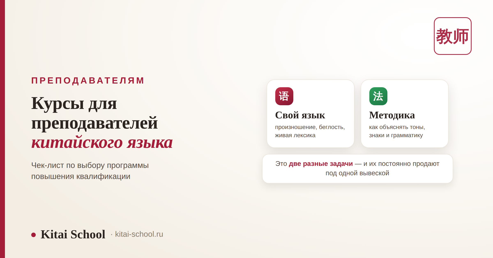
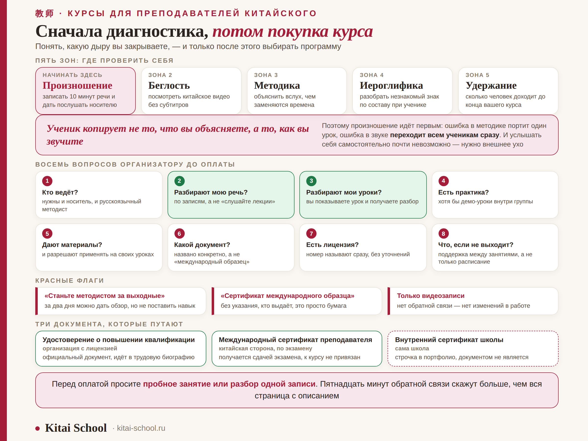

Преподавателям
Курсы для преподавателей китайского языка: чек-лист по выбору программы


Эта статья — для коллег. Преподаватель китайского оказывается в необычном положении: он одновременно должен владеть языком, который сам продолжает учить всю жизнь, и уметь его объяснять — а это отдельная профессия со своей теорией. Курсы повышения квалификации обещают закрыть и то и другое, но чаще закрывают что-то одно, не говоря об этом прямо. Разберём, как понять, чего не хватает именно вам, и по каким признакам выбрать программу, которая это даст.
Язык и методика — два разных курса, и их постоянно продают под одной вывеской. Начинать стоит с диагностики собственного произношения: это единственная зона, где ошибка преподавателя переходит всем ученикам сразу. В хорошей программе есть и носитель, и русскоязычный методист, а главное — обратная связь по вашей речи и вашим урокам, а не одни видеозаписи. Документы бывают трёх видов, и «международный сертификат» школы без указания, кто его выдаёт, документом не является.
Два разных запроса, которые постоянно путают
Когда преподаватель говорит «хочу на курсы», за этим стоит один из двух запросов — а иногда оба сразу, но человек этого не разделяет. И курсы, кстати, тоже не всегда разделяют.
| Запрос | Что нужно | Как выглядит подходящая программа |
|---|---|---|
| Свой язык | произношение, беглость, современная лексика, чтение без словаря | занятия с носителем, разбор ваших записей, много говорения |
| Методика | как объяснять тоны, вводить иероглифы, строить урок, держать мотивацию | теория преподавания китайского как иностранного, разбор ваших уроков, готовые приёмы |
Проверить программу на это легко. Откройте описание курса и поищите, сказано ли там хоть что-то о том, как объяснять. Если весь план состоит из тем вроде «продвинутая грамматика» и «деловая лексика», перед вами языковой курс — возможно, отличный, но методики в нём нет. И наоборот: если про язык не сказано ни слова, ваше собственное произношение там никто не тронет.
Честный ответ на вопрос «что важнее» зависит от стажа. Начинающему преподавателю с хорошим языком нужнее методика. Опытному, который двадцать лет ведёт уроки по одним и тем же материалам, чаще нужнее язык: он законсервировался на уровне, до которого дошёл когда-то, и заметить это самостоятельно почти невозможно.
Чек-лист: чего не хватает именно вам
Прежде чем выбирать курс, стоит понять, какую дыру вы закрываете. Пять зон и способ проверить каждую.
| Зона | Как проверить себя | Тревожный сигнал |
|---|---|---|
| Произношение | записать десять минут своей речи и дать послушать носителю | носитель дважды переспрашивает или мягко повторяет за вами слово |
| Беглость и актуальность языка | посмотреть китайское видео без субтитров, послушать подкаст | понимаете учебные диалоги, но теряетесь на живой речи |
| Методика | объяснить вслух, почему в китайском нет времён и чем они заменяются | объяснение сводится к «просто запомните» |
| Иероглифика | показать ученику, как разобрать незнакомый знак по составу | сами учили знаки как картинки и так же их даёте |
| Удержание учеников | посмотреть, сколько человек доходит до конца вашего курса | уходят после первых уроков с тонами |
Последняя строка обычно оказывается неожиданной. Отток на тонах — это почти всегда не про сложность языка, а про то, как тоны были поданы: если ученик услышал «просто запомните мелодию», он уходит. Значит, дыра не в языке преподавателя, а в методике.
Произношение: почему это первый пункт
Из всех зон эта одна особенная, и вот почему. Ошибка в методике портит один урок. Ошибка в произношении преподавателя переходит всем ученикам сразу и остаётся с ними на годы.
Ученик копирует не то, что вы объясняете, а то, как вы звучите.
Поэтому диагностику стоит начинать с себя, а не с методикиОтдельная сложность в том, что собственное произношение услышать почти невозможно. Мы слышим себя через кости черепа, а не так, как нас слышат окружающие, и мозг достраивает то, что мы хотели сказать. Единственный работающий способ — запись и внешнее ухо: носитель, коллега или преподаватель-фонетист.
Типичные места, где спотыкаются даже опытные русскоязычные преподаватели: ретрофлексные zh, ch, sh, r, разница между 四 и 十, третий тон в потоке речи и изменение тона у 一 и 不. Что именно с этим делать, разобрано в статье про корректировку произношения.

Из личного опыта
Я преподавала уже несколько лет, когда на конференции разговорилась с китайским коллегой. Он был безупречно вежлив, но дважды за разговор мягко переспросил — и оба раза на одном и том же месте. Я списала на шум в зале.
Дома записала себя на диктофон и послушала. Место было одно: мой третий тон в середине фразы. В упражнениях он звучал идеально, а в живой речи я его проглатывала — годами, не замечая. И, разумеется, ученики повторяли за мной ровно это.
Переучивалась я дольше, чем учила изначально: сломать привычку сложнее, чем поставить с нуля. Зато с тех пор я знаю две вещи наверняка. Первая: слышать своё произношение нельзя, нужно внешнее ухо. Вторая: то, что мы преподаём, стоит проверять хотя бы раз в несколько лет — не из недоверия к себе, а потому что навык дрейфует незаметно.
Восемь вопросов, которые стоит задать до оплаты
Описание курса на сайте почти всегда звучит хорошо. Настоящую картину дают ответы на конкретные вопросы — и то, насколько охотно на них отвечают.
| Вопрос | Какой ответ хороший |
|---|---|
| 1. Кто ведёт занятия? | и носитель, и русскоязычный методист — они видят разное |
| 2. Будет ли обратная связь по моей речи? | да, с разбором записей, а не «слушайте лекции» |
| 3. Разбирают ли мои уроки? | да, вы показываете свой урок и получаете разбор |
| 4. Есть ли практика с настоящими учениками? | да, хотя бы демо-уроки внутри группы |
| 5. Дают ли материалы и можно ли их использовать? | да, с прямым разрешением применять на своих уроках |
| 6. Какой документ на выходе? | названо конкретно: удостоверение, сертификат школы или ничего |
| 7. Есть ли у организации лицензия? | номер лицензии называют сразу, без уточняющих вопросов |
| 8. Что делать, если не получается? | есть поддержка между занятиями, а не только расписание |
Обратите внимание на вопросы 2 и 3 — они главные. Курс без обратной связи не меняет навык, он только расширяет кругозор. Это не плохо само по себе, просто нужно понимать, за что вы платите: за информацию или за изменения в собственной работе.
Красные флаги
| Формулировка | Что за ней стоит |
|---|---|
| «Станьте методистом за выходные» | за два дня можно дать обзор подходов, но не поставить навык |
| «Сертификат международного образца» | без указания, кто именно выдаёт, это просто красивая бумага |
| Только видеозаписи | нет обратной связи — нет изменений в вашей работе |
| Программа без единого слова о методике | это языковой курс под другим названием |
| Нет ни одного имени преподавателя | непонятно, чей опыт вы перенимаете |
| «Гарантируем поток учеников» | поток зависит от вашей работы и продвижения, а не от курса |
Документы: какая бумага что даёт
Здесь три разные вещи, которые в рекламе часто смешивают в одну.
| Документ | Кто выдаёт | Что даёт |
|---|---|---|
| Удостоверение о повышении квалификации | организация с образовательной лицензией | официальный документ, идёт в трудовую биографию |
| Международный сертификат преподавателя китайского | китайская сторона, по итогам отдельного экзамена | признаётся в китайских программах; к курсу не привязан |
| Внутренний сертификат школы | сама школа | строчка в портфолио, документом не является |
Оговорка про международный сертификат: он получается сдачей экзамена, а не окончанием курса. Курс может к нему готовить — это нормально и полезно, — но обещание «выдадим по итогам» стоит уточнять предметно. Требования и формат экзамена меняются, поэтому актуальные условия всегда смотрите у самой китайской стороны, а не в описании курса.
Ещё одно понятие, которое полезно знать: 对外汉语 (duìwài hànyǔ) — «китайский как иностранный». Это отдельная специальность в китайских вузах со своей методикой, и она отвечает на вопросы, которых нет в обычной филологии: в каком порядке давать тоны, как вводить иероглифы, чем заменить объяснение времён. Получать эту специальность необязательно, но её подходы лежат в основе современных учебников, и понимать их логику стоит.
Что мы даём в своей программе
Раз уж мы разбираем чек-лист, честно приложим к нему себя. У Kitai School есть программа для преподавателей китайского языка, и построена она ровно по этим пунктам: работа с собственным языком вместе с носителем, методика от русскоязычных методистов, разбор ваших записей и ваших уроков.
Отдельно про документ: школа работает по образовательной лицензии, номер указан внизу каждой страницы, поэтому мы говорим о нём прямо, а не прячем за формулировкой «международный образец». Что именно входит в программу и в каком формате идут занятия — на странице для педагогов.
И совет, который стоит дать независимо от того, к кому вы пойдёте: перед оплатой попросите пробное занятие или разбор одной вашей записи. Пятнадцать минут обратной связи скажут о программе больше, чем вся страница с описанием.
Частые вопросы (FAQ)
Чем курсы для преподавателей отличаются от обычных курсов китайского?
Обычный курс поднимает ваш уровень языка. Курс для преподавателей должен решать две задачи сразу: язык плюс методика преподавания китайского как иностранного. Это разные вещи, и хорошая программа их разделяет. Если в описании курса нет ни слова про то, как объяснять тоны, иероглифику и грамматику, перед вами просто языковой курс с другим названием.
С чего начать, если преподаю давно, но чувствую пробелы?
С диагностики собственной речи. Произношение — единственная зона, где ошибка преподавателя переходит всем ученикам сразу, и заметить её самостоятельно почти невозможно: своё звучание мы слышим не так, как окружающие. Запишите себя на диктофон и дайте послушать носителю или коллеге. Всё остальное — методику, материалы, работу с мотивацией — можно добирать постепенно.
Что такое 对外汉语 и нужно ли это преподавателю?
对外汉语 (duìwài hànyǔ) — «китайский как иностранный», отдельная специальность в китайских вузах со своей методикой. Она отвечает на вопросы, которых нет в обычной филологии: в каком порядке давать тоны, как вводить иероглифы, чем объяснять отсутствие времён. Специально получать эту специальность необязательно, но знать её подходы полезно — на них построены современные учебники.
Какие документы бывают по итогам курса?
Три разных вещи. Удостоверение о повышении квалификации выдают только организации с образовательной лицензией, оно идёт в трудовую биографию. Международный сертификат преподавателя китайского выдаёт китайская сторона по итогам отдельного экзамена, к курсу он не привязан. Внутренний сертификат школы документом не является — это строчка в портфолио, и подавать его как «международный образец» некорректно.
Сколько должен длиться нормальный курс?
Смотрите не на срок, а на объём обратной связи. Программа, где вам разбирают ваши записи и ваши уроки, работает даже за месяц; курс из одних видеозаписей не даст результата и за полгода. Обещание «сделаем из вас методиста за выходные» — повод закрыть страницу: за два дня можно дать обзор подходов, но не поставить навык.
Обязательно ли, чтобы вёл носитель языка?
Нужны оба. Носитель слышит в вашей речи то, чего не слышит русскоязычный коллега, и даёт живой язык. Русскоязычный методист понимает, где именно спотыкается русскоговорящий ученик, и умеет объяснить это по-русски. Программа только с носителями рискует не заметить ваших типичных ошибок, программа без них — законсервировать акцент.
Если хотите начать с диагностики, а не с покупки курса — приходите. Посмотрим на ваш язык и вашу методику, скажем честно, где дыра, и только потом обсудим, нужна ли вам программа для преподавателей. Первая встреча — бесплатная.
Открыть программу для педагогов →
Или напишите слово ПРЕПОДАВАТЕЛЬ нашему менеджеру в Telegram — разберём вашу ситуацию.
Дальше по теме: что делать с собственным акцентом — корректировка произношения; как объяснять устройство знака — значение ключей в иероглифах; что реально трудно ученику — сложно ли учить китайский с нуля; обучение команд — корпоративный китайский.
Источники
- Практика Kitai School — работа с преподавателями китайского и разбор их уроков.
- Методика 对外汉语 — преподавание китайского как иностранного, подходы к порядку подачи материала.
- Требования к документам о повышении квалификации в организациях с образовательной лицензией.
Коллеги, удачи в работе! 加油！